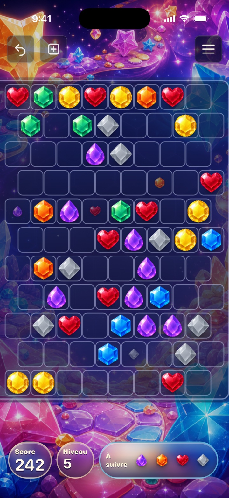

Trouvez un passage
Choisissez une pièce, puis une case vide accessible par des cases libres.
Un peu d’espace. Un coup bien pensé.
Déplacez les pièces, reliez-en au moins six de même couleur et gardez un passage pour la suite.
Essayer gratuitement sur l’App Store
01 — 02 — 03
Choisissez une pièce, puis une case vide accessible par des cases libres.
Au moins six pièces voisines de même couleur sont éliminées. Un coup qui marque permet de rejouer sans ajouter les pièces annoncées.
Si votre coup ne marque pas, les pièces annoncées arrivent. Gardez des chemins libres : la partie se termine lorsqu’aucun déplacement légal ne reste.
Jouez en mode Détente ou Défi avec tous les plateaux et styles de pièces. Chaque partie gratuite se termine après 100 coups valides, ou plus tôt s’il n’y a plus de coup possible. Les parties et scores d’essai ne sont pas sauvegardés ; les préférences sont conservées.
Téléchargement gratuit ; un achat unique débloque le jeu complet. Débloquez les tours illimités, les parties séparées pour chaque difficulté, les records et la sauvegarde iCloud facultative.